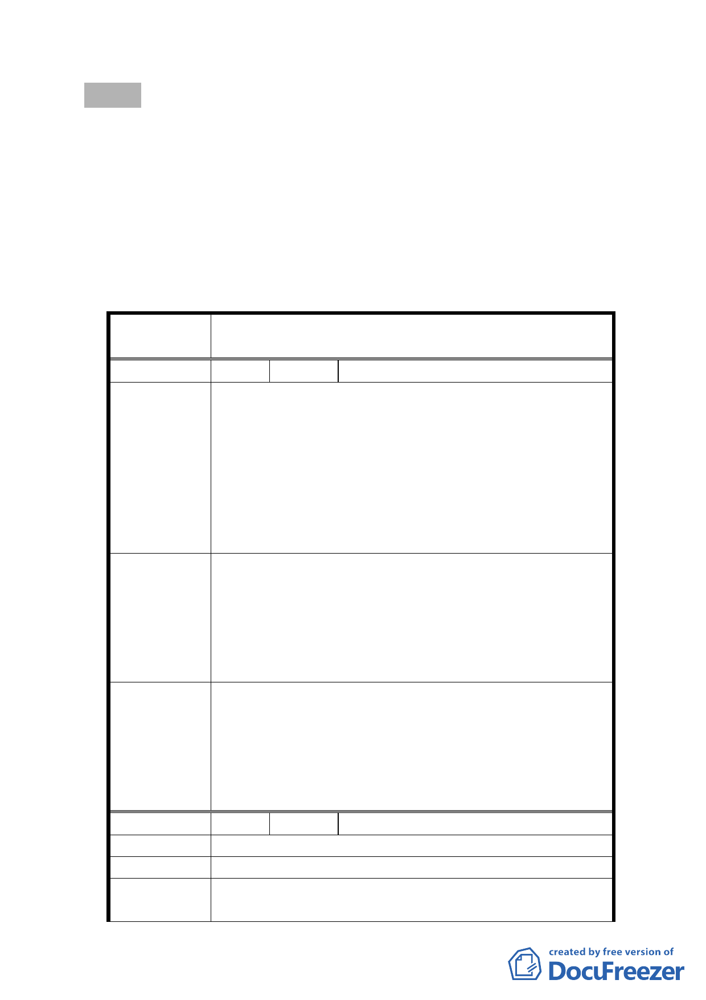

函送續審補充資料到會提委員會續審。
決議：
一、因本案大學用地係屬公共設施用地，依規定不必擬訂細部計
畫，故本案予以退回。
二、本案大學用地容積率依「台北市土地使用分區管制規則」規
定，係由教育主管機關及都市計畫主管機關共同商定之，本
案據上述兩機關商定結果之容積率為 225％。
三、公民或團體所提意見審決如後附綜理表。
臺北市都市計畫委員會公民或團體所提意見綜理表
案
名
擬定臺北市士林區三玉段一小段 22-3 地號等大學用地
（供臺北市立體育學院使用）細部計畫案
編 號 １ 陳情人 林長友
1、本案建蔽率其計劃書所擬定的 50％，不符合臺北市
土地使用分區管制規則第八十三條規定。
2、本案計畫範圍共 5.82 公頃，應就本案土地範圍規
陳情理由
劃，不應夾雜非本案範圍土地合併規劃。
3、本案之計劃書內並未說明本案的容積率為多少，與
本市於中華民國九十一年十二月二十三日府都二
字第 09108211600 號訂定台北市大專學校容積率標
準之意旨有所違。
1、本案建蔽率應由計劃書所擬定的 50％，下修至 40
％。
建議辦法
2、刪除並與體育場用地合併規劃等與本案計畫範圍無
關之土地範圍之字眼。
3、本案應明訂其容積率並以不超過臺北市大專學校容
積率標準的最上限 300％。
一、因本案大學用地係屬公共設施用地，依規定不必
擬訂細部計畫，故本案予以退回。
委員會決議
二、本案大學用地容積率依「台北市土地使用分區管
制規則」規定，係由教育主管機關及都市計畫主
管機關共同商定之，本案據上述兩機關商定結果
之容積率為 225％。
編 號 2 陳情人 徐偉舜
陳 情 理 由 大學用地與體育場地分開，不要合併規劃。
建 議 辦 法 （空白）
委員會決議
因本案大學用地係屬公共設施用地，依規定不必擬訂
細部計畫，故本案予以退回。
-4-